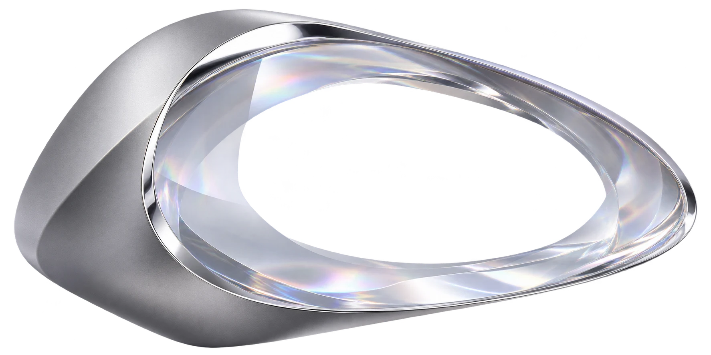

DIGITAL ENGINEERING / 2026Проектируем
Проектируем
цифровые системы
для роста бизнеса.
Сайты, программные продукты, искусственный интеллект и автоматизация — в единой архитектуре.
Россия · Краснодар

01 / CUSTOM SOFTWAREAI · API · WEBENGINEERING LABОдна система вместо набора разрозненных сервисов
КлиентИнтерфейсИнтеллектCRM / ERP